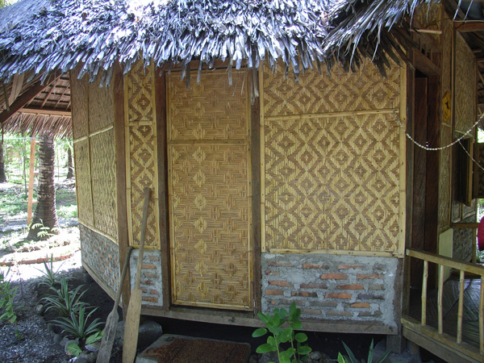
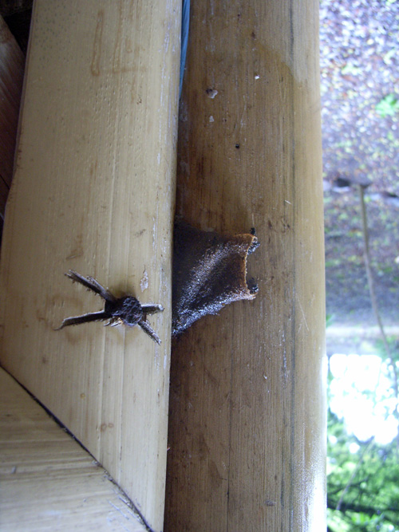
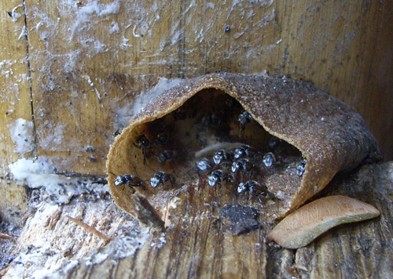

Indonesia Trav-E-Logs ©
Waiterang, Flores
|  | |
| back: Cebu | |
================================= Hope everyone is enjoying the holiday season, and making plans to travel to an exotic place in the New Year. =================================
December, 2006
|
Just 35 kilometers east from Maumere, Sunset Huts are located on a white sand beach near snorkeling and diving spots. The ride there was just as interesting, as I hired an ojek (motorcycle-taxi) for door-to-door service, as the huts are located some distance from the main road. Each time an interesting bamboo design was seen along the main road, the driver would stop long enough for photography. Then, while snorkeling immediately off the beach I spotted my first banded sea snakes. Snorkeling was otherwise very disappointing as most of the coral is white -- and the crown of thorns starfish numerous and fat. No colorful soft coral was found. An Australian resident has been paying several of the young boys to remove many of these coral-eating starfish -- thousands of them. She also pays the young girls to remove trash from the beach, but booth projects seem doomed to failure. Pelni ships dump tons of garbage on each passage, and new hungry starfish young arrive continually with the currents. On many of the bamboo structures can be found a curious brown pouch with insects flying around. This is actually the entrance to a beehive, built by very small bees that use the bamboo cavities. The bees seem pretty docile, as my hand came into contact with one pouch several times without consequence. Here are close ups of two pouches on the veranda. Would you call these white-faced bees? At first only two other guests were there -- a French lady and a Swiss lady. The former has been working in Indonesia for seven years, and the latter visits Indonesia yearly. The last evening, four more travelers showed up -- a Dutch/Irish couple on a short vacation, and a German couple. Several of us talked up a snorkeling trip to some offshore islands for the following day. Had heavy rain and wind that night, and the morning skies looked threatening, so decided not to go on the snorkeling trip. That was my call to pack up and hit the road. |
  |
Bill
------------------------------
Email me at: "juno.com" preceded by an "@" and "dancer2SEAsia"
"The backpacker discovers people are beautiful everywhere. It's the Governments that are evil."
| next: Larantuka |
| back: Cebu |